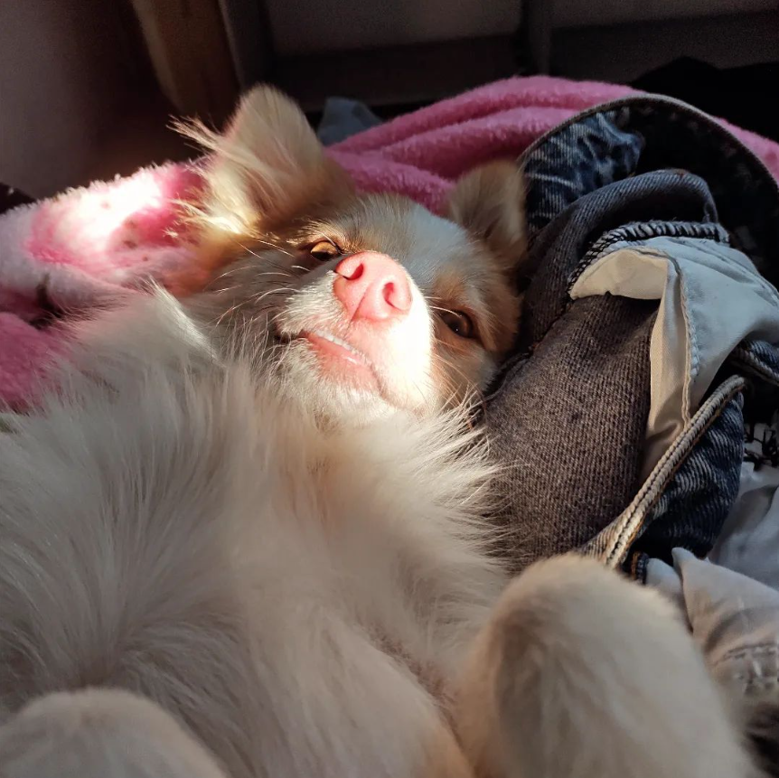

Sobre PerritoLagunero

¡Hola! Somos un bazar de ropa de estilo retro/urbano. Nos gustan las prendas con estampados especiales y texturas únicas, los botones raros y las etiquetas bonitas. Cada prenda es elegida con cariño y mucha dedicación. Detrás del equipo de “Ropero de Perrito Lagunero” están personas que se esfuerzan por siempre dar lo mejor de sí y sus amigos peludos motivando sin descanso. Esperamos que nos brinden su confianza y se queden con nosotros para las futuras actualizaciones.